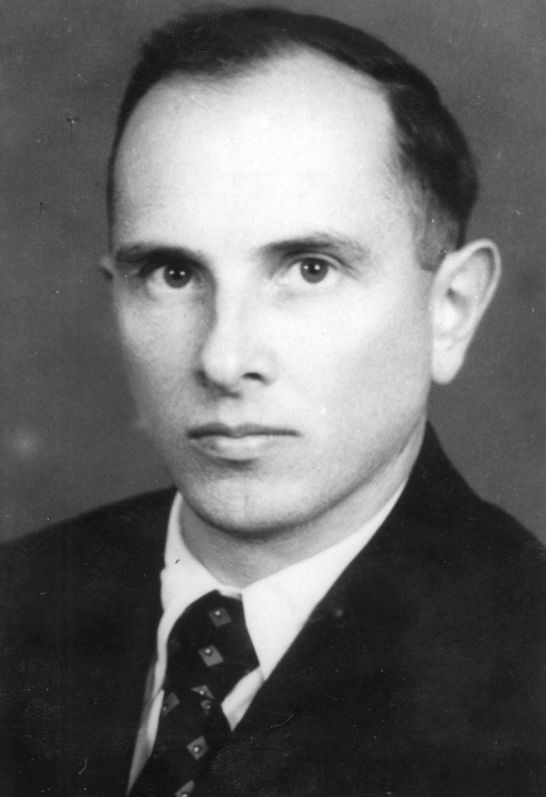

Останні новини


Степа́н Андрі́йович Банде́ра (1 січня 1909, с. Старий Угринів, Калуський повіт, Королівство Галичини та Володимирії, Австро-Угорщина, нині Калуського району Івано-Франківська область, Україна — 15 жовтня 1959, радикальних та чільних ідеологів, практиків і теоретиків українського націоналістичного руху XX століття, після розколу Організації українських націоналістів — голова Проводу ОУН-Б. Разом з Миколою Лебедем організували вбивства Броніслава Перацького за проведення політики пацифікації та Олексія Майлова за проведення спланованого та штучно організованого голоду на українських землях 1932—1933 років.